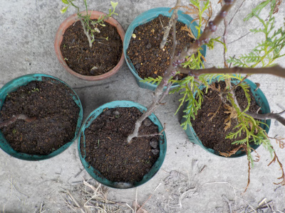
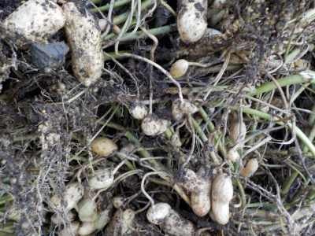

冬っぽくなったので鉢の植替えを始めました。
2023/11/25

葉を落としたり葉色が茶色くなってきたので、植木鉢の植替えをすることにしました。
今シーズンは全部の鉢を植え替えるつもりです。
2023/11/25

葉を落としたり葉色が茶色くなってきたので、植木鉢の植替えをすることにしました。
今シーズンは全部の鉢を植え替えるつもりです。
2023/11/19

家で作った落花生はとっても美味しいので、食べるのが楽しみです。
沢山作って収穫したいとも思いますが、お店でバタピーを買った方が手軽なのでなかなか出来ないです。
過去の日記
11月はタマネギだな。